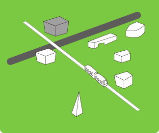
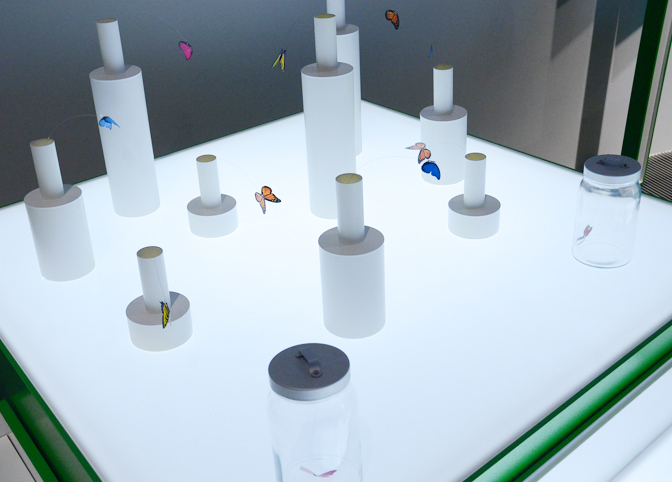
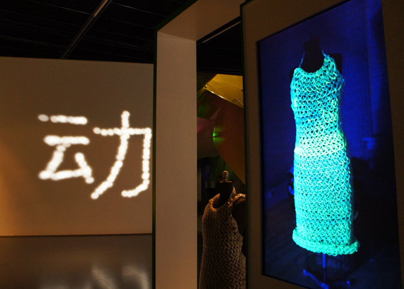
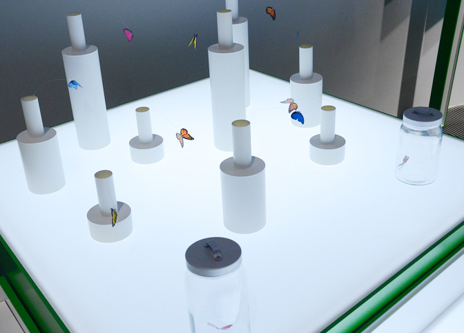
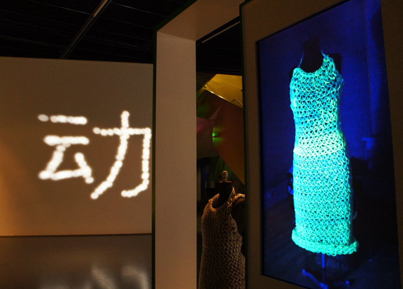
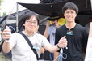

Robotinity - 「ロボットらしさ」とは何か
 フェスティバルの中心となる「Ars Electronica Center」の地下では、「humanity」に対する造語である「robotinity」というテーマで「Ars Electronica Futurelab」による展示が行われました。この新たな企画では、「ロボットらしさとは何か？」という問いかけがなされています。何年後かの未来、私たちの社会の中でロボットが「生活」を始めるであろうことは想像に難くありません。では、人間とロボットはどのように共生していくべきなのでしょうか？「Robotinity」を通してその答えの一端が見えてきます。
フェスティバルの中心となる「Ars Electronica Center」の地下では、「humanity」に対する造語である「robotinity」というテーマで「Ars Electronica Futurelab」による展示が行われました。この新たな企画では、「ロボットらしさとは何か？」という問いかけがなされています。何年後かの未来、私たちの社会の中でロボットが「生活」を始めるであろうことは想像に難くありません。では、人間とロボットはどのように共生していくべきなのでしょうか？「Robotinity」を通してその答えの一端が見えてきます。


 





小さなロボットに顔をあてがうことで、人らしさならぬ「ロボットらしさ」が浮かび上がってくる。
 展示はいくつかのブースに分れており、こちらはそのひとつ「myBot」に展示されていた手のひらサイズのロボット。ワークショップ参加型のこの展示は来館者自身の顔をiPod nanoのスクリーンに映し出し、それをロボットの頭の部分に取り付けるといったシンプルなもの。「たったそれだけ？」と思われるかもしれませんが、ついさっきまでぜんまい仕掛けの機械でしかなかった物体が自分と同じ顔を携えて動きまわる様は想像以上の示唆を私たちにもたらしてくれます。
展示はいくつかのブースに分れており、こちらはそのひとつ「myBot」に展示されていた手のひらサイズのロボット。ワークショップ参加型のこの展示は来館者自身の顔をiPod nanoのスクリーンに映し出し、それをロボットの頭の部分に取り付けるといったシンプルなもの。「たったそれだけ？」と思われるかもしれませんが、ついさっきまでぜんまい仕掛けの機械でしかなかった物体が自分と同じ顔を携えて動きまわる様は想像以上の示唆を私たちにもたらしてくれます。
その他に、同じく参加型展示の「SWITCH」、石黒浩研究室との共同リサーチである「テレノイド」、日本でもおなじみの冨田伊織による「透明標本」など、非常に興味深い展示に溢れていました。
FabLab - 根源としての物作り
 人間が今日まで生き残ることのできた理由のひとつに「物を作り出すことができる」能力の存在があげられます。しかし、大企業による大量生産が一般化した社会では、物を作るという行為が限られた一部の職人だけのものとなっているのが現状です。
人間が今日まで生き残ることのできた理由のひとつに「物を作り出すことができる」能力の存在があげられます。しかし、大企業による大量生産が一般化した社会では、物を作るという行為が限られた一部の職人だけのものとなっているのが現状です。
MITから始まったFabLab(Fabrication/Fabulous Laboratory)の活動はここ「Ars Electronica Center」にも飛び火し、物を生み出す技術とその喜びを再び人々が取り戻すための一助を担っています。スペース内にはレーザーカッターや3Dプリンタ、カッティングマシンなどが誰でも使える状態で設置されており、人々はそれらを使って、これまで企業にしか出来なかった精巧な造形やデザインを現実のものにしたり、企業には困難な世界にひとつのプロダクトを作ることができます。
人間が持つ根源的な能力、そして喜びを呼び覚ます「FabLab」の活動・展示には、まさしく「origin」を感じました。


Create Your Game
u19(19歳以下向け)企画のひとつ"Create Your Game"。参加者が思い思いに自分のゲームを制作していた。
BioLab
眼と視覚に関する展示が多かったのも印象的。このブースでは自分の網膜を撮影し、それを観ることができる。
センターのそこかしこに現れるガイド役キャラクターの名前はMaru-san(まるさん？)。

Franz GsellmannによるDie Weltmaschine(the World Machine)は象徴的な展示とも言える。

クワクボリョウタは「10番目の感傷(点・線・面)」を現地スタッフと共にリアレンジ。

Linz Art Universityで開催された筑波大学キャンパスエキシビジョン内でインスタレーション「シークレット」を展示されていた坂本のどかさん。在学中から一貫して、日々の中で素通りしがちな空気を掬い取るような作品を発表しており、その作風はここリンツでも多くの鑑賞者をたのしませていました。
「シークレット」(2008)。作品は現地のホームセンターで調達した素材を用いてリアレンジされた。

坂本のどかさん

19歳以下向けの企画である"u19"内では数多くのワークショップが開催され、菅野創さんと山本雄一さんによる「テクノフォン」のハンズオンワークショップも行われました。「テクノフォン」は、身の回りの電気製品の光や、電磁波、電波などテクノロジーのサウンドスケープを聞くためのデバイス。参加者はハンダ付けなどに苦戦しながらも、完成した作品を思い思いに楽しんでいました。同じく菅野さんの作品である"Jamming Gear"は3月まで常設されています。

ワークショップの様子。

山本さんと菅野さん。お疲れ様でした！

昨年「サイバーアーツジャパンーアルス・エレクトロニカの30年」が開催されたこともあり日本人にも相当ゆかり深いフェスティバルであることは知ってはいたものの、ここまで日本人だらけとは思っておらず驚きました…。あえてその作品群に共通する部分を見出すとすれば、その細やかな感情の揺れ動きや、心の微妙な隙間に入り込むような表現が挙げられると思います。それらは時おり非常に鋭利で恐ろしく、その感覚に触れて感情が動くことで、自分が日本人であることを再認識したりします。"media"が"medium=媒介、仲介者"の複数形であり、さらに「霊媒」という意味も持つことに思いを馳せたりすることがわりと多いんですが、基本的にはメディアアートとは「向こう側」と僕らを繋ぎ合わせるものであって欲しいなという期待が少なからずあります。「向こう側」って何でしょうか？なんかヤバそうです。そう、いつでもヤバい場所を見せてくれるのがメディアアートであって欲しい。想像の向こう側、感情の向こう側、身体の向こう側。向こう側は意外と近いのでなかなか気づくことが難しい。昨年ICCで観たクワクボさんの「10番目の感傷(点・線・面)」は向こう側に行かせてくれた数少ない作品のひとつであり、それがここリンツの地でリアレンジされ展示されている光景には勝手に感慨めいたものを感じました。
異国の地でも惜しみなくその魅力を振りまきまくった日本勢、来年はどんな人・作品に出会えるのか？今から本当に楽しみです。